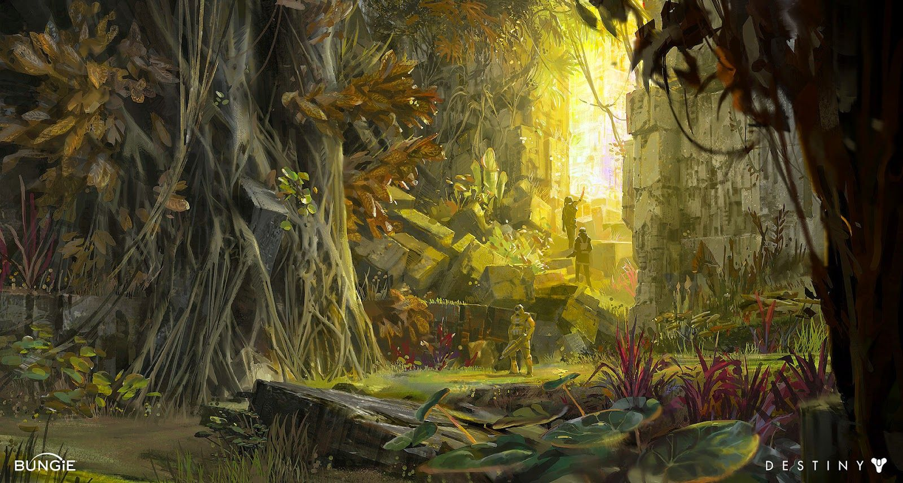

Venus
"Venus has been reclaimed by the jungle. Dragonflies flit through ruined academies and abandoned dig sites. Volcanoes smolder. Here and there a line of light marks where ancient Vex spires, thought long-dead, have once more been energized."
The Ishtar Collective
he Ishtar Collective’s Archives hold a wealth of information about the Vex, including notes on how the Vex minds work, some fractured data about the Black Garden, and even a map of the Vault of Glass. Most recently, references to Praedyth have been found. A Collective research team consisting of Dr. Shim, Maya Sundaresh, Chioma Esi, and Duane-McNiadh, captured a Vex to study. Esi discovered that the Vex was running a simulation of their research team that was completely accurate. After much debate, they conclude that the only way to save themselves from the simulation is to bring in something the Vex cannot simulate—a Warmind. They were able to rescue 227 undamaged copies of themselves from inside the Vex, and all copies voted to become explorers in the Vex information network. Both the Fallen House of Winter and the Hezen Corrective, a Vex subtype, have attempted to access the information stored in the Archives. A Guardian successfully brought the Archives back online and its information is now available to the Tower.